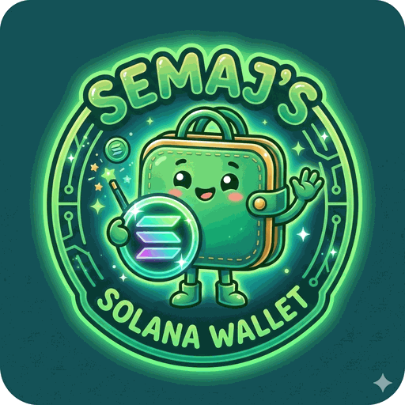

No active or cooling stake accounts found.
Awaiting initialization...
Asset: SOL
Caps sequential swaps in the route (X→A→Y is 2 hops). Fewer hops = shorter transaction message and a cleaner path, sometimes at a slightly worse price. Not saved: starts on Unlimited each time the app loads.
Tap QR to switch to Animated QR mode
Optional. Locks the app behind a passcode until this tab is closed — reopening a background tab never re-prompts, only opening fresh does. Tied to this browser only; not included in Export/Import Settings.
Scans your Keystone's account-export QR (public keys only — the same one it shows for Solflare, Backpack, etc.) to learn the exact path and fingerprint for each account, so the derivation path never has to be guessed.
Lower = simpler/larger QR per frame but more frames to scan. Higher = denser QR but fewer frames. Default 800.
How long each frame stays on screen before cycling. Raise this if your camera struggles to capture frames cleanly. Default 150.
This app is read-only by itself — it works together with the Semaj Solana Wallet (the hardware signing device), or with Keystone QR code signing devices.
This is a watch-only Solana wallet. It never holds, imports, or asks for a private key or seed phrase — it only ever works with public addresses. To actually sign a transaction, it hands the unsigned transaction to a separate signing device (a Keystone hardware wallet, or any other device that understands its QR formats) as a QR code, and scans back a QR code containing the signature. The private key never touches this app, this browser, or this device at any point.
TOTAL VALUE at the top is your staked SOL plus your token balances, combined into one USD figure.
Native Staking lists any stake accounts tied to the current wallet, with their state (Activating, Active, Deactivating/"Cooling Down", or Deactivated) and the right action button for that state.
Token Assets & Balances lists SOL and every SPL token with a non-zero balance.
Wallet Synchronization has: SYNC (re-fetch balances and stake accounts), SOLSCAN (open this wallet on the Solscan block explorer), MANAGE WALLETS (see §3), and the ⚙️ gear icon (Settings, see §11).
This app can track several watch-only addresses. Open MANAGE WALLETS to add one (paste or scan a Solana address), switch the active wallet, or delete one. A wallet that's been paired with a Keystone device (see §9) shows a small ℹ️ icon — tap it to see the saved derivation path and device fingerprint for that address.
If you've turned on "Require passcode to switch wallets" in Settings, switching to a different saved wallet will ask for your passcode first.
Address safety check. Before an address is added (pasted or scanned), the app checks that it is a valid Solana address and looks it up on-chain. An ordinary wallet is added straight away. Token accounts, stake accounts, program or PDA accounts, and anything else that isn't a wallet are refused, with an explanation of what the address actually is. An address that doesn't exist on-chain yet (it has never received SOL) is added only after you confirm — that is normal for a brand-new wallet, but a mistyped address looks exactly the same, so compare it with the original. If the on-chain check can't complete (for example the RPC node is unreachable), the address is not added.
Open Transfer Asset from the dashboard, enter or scan a recipient address, and an amount (or tap MAX). GENERATE TRANSACTION MESSAGE builds the unsigned transaction and opens the signing dialog — see §7.
The recipient gets the same address safety check described in §3, before anything is built: an invalid address, a token/stake/program account, or an address that can't be a wallet is blocked with an explanation, and a brand-new address asks you to confirm first. If the on-chain check can't complete, no transaction is generated.
The Transfer Asset and Jupiter Token Swap blocks are foldable — tap the header to open or close either one.
Inside the swap block: pick a destination token, an amount, an Execution Speed Mode (ECO/Standard/Fast — this sets both the priority fee and the slippage tolerance: ECO is 0.05% slippage, Standard is 0.1%, Fast is 0.5%), and optionally a Max Route Hops limit.
Max Route Hops caps how many sequential swap legs a route may use (X→A→B→Y is 3 hops) — a lower limit means a shorter transaction and a cleaner path, sometimes at a slightly worse price. It defaults to Unlimited every time the app loads and is not saved between sessions — if you want a limit, you pick it again each time.
GENERATE SWAP MESSAGE fetches a quote from Jupiter, builds the swap transaction, and opens the signing dialog with a folded Details block showing the route (which pools it uses and the amount at each hop), the effective rate, the projected output amount, the transaction fee, and the slippage tolerance.
Open Delegate Stake, choose a validator from the list (or paste/scan a validator vote account address manually) and an amount, then GENERATE STAKING MESSAGE.
A stake account moves through states: Activating → Active → (after you deactivate it) Deactivating, shown as "Cooling Down" with no action available — then once the epoch turns over, Deactivated, which is when Withdraw becomes available and your SOL (plus the rent reserve) returns to your wallet.
After generating any transaction, a QR code appears for your signing device to scan. There are two QR formats, and you can switch between them by tapping the QR code itself:
Below the QR, a folded Details block (tap to open) shows a plain-language summary of what you're about to sign — amounts, addresses, validator, transaction fee, and so on — above the raw payload text.
↻ Refresh (on the right of the Details button) rebuilds the same transaction with a fresh blockhash. A blockhash is only valid for about a minute, so if signing took a while — or the app tells you the transaction has expired — tap Refresh and sign again. It uses exactly the same recipient, amount, validator or swap settings as before; for a Jupiter swap it also fetches a fresh quote, so the Details figures may change slightly. Anything you had already signed for the old version no longer applies, so sign the refreshed QR instead.
Once your device has signed, tap 📷 SCAN SIGNED QR RETURN to scan its response with your camera, or use 📂 LOAD FROM QR CODE IMAGE to pick a photo of it instead. The app automatically detects whether the scanned data is a plain Base10 signature or a Keystone UR response and handles either one the same way — broadcasting the fully signed transaction to the network and showing a link to view it on Solscan.
In Settings → Keystone & Animated QR → 🔗 PAIR KEYSTONE DEVICE, scan the account-export QR that Keystone shows when you choose to connect it to a wallet app (the same screen it would use for Solflare, Backpack, etc. — nothing Keystone-specific has to be set up for this app). This reads only public keys: the account's address, its exact derivation path, and the device's fingerprint (a non-secret identifier derived from the public key, not the seed). Saving the result against a wallet means every future Keystone Animated QR for that address is built with the correct path and fingerprint automatically, instead of guessing.
Set one in Settings → Passcode. It's a numeric code (4+ digits), entered with an on-screen keypad. Once set, the app shows a lock screen on every fresh page load or reload — but not when you just switch back to an already-open tab, since that isn't a fresh load.
Require passcode to switch wallets (also in Settings) additionally asks for the passcode whenever you switch to a different saved wallet, not just on page load.
The passcode is stored encrypted and tied to this specific browser — it cannot be unlocked from a copy of the data on another device, and it is deliberately never included in Export/Import Settings, so it has to be set up again on each device on purpose.
This is a convenience lock for this screen, not encryption of any funds — remember that this app never holds a private key in the first place (§1), so there's nothing for the passcode to protect beyond who can open the app on this device.
Settings is grouped into: RPC (a custom Solana RPC endpoint, if you don't want the default), Passcode (§10), Keystone & Animated QR (device pairing, and the animated QR's fragment size / frame interval — lower fragment size means simpler but more numerous QR frames; raise the frame interval if your camera struggles to keep up), and Save & Reload / Export / Import at the bottom.
From Settings, ⬆️ EXPORT shows all of your settings as one JSON block you can copy and save somewhere safe; ⬇️ IMPORT lets you paste a JSON block back in. This covers your RPC URL, animated-QR tuning, saved wallet addresses, Keystone pairings, the wallet-switch passcode preference, and any additional SPL tokens you've added (§13) — but never the passcode itself (§10), which always has to be set up by hand on each device. An example:
{
"custom_solana_rpc_url": "",
"qr_max_fragment_length": "800",
"qr_frame_interval_ms": "150",
"solana_wallets_list": [
"Hevpzti8zq7UPbZyh9CZjQh8zVFetXq3xpCSZ4L13NNa"
],
"last_solana_address": "Hevpzti8zq7UPbZyh9CZjQh8zVFetXq3xpCSZ4L13NNa",
"keystone_paired_wallets": {
"Hevpzti8zq7UPbZyh9CZjQh8zVFetXq3xpCSZ4L13NNa": {
"fingerprintHex": "4b87825b",
"path": "m/44'/501'/0'"
}
},
"passcode_require_for_wallet_switch": "false",
"additional_spl_tokens": {
"57Q2HhPawWgj1UQz4oz7o6gg1RHNFZPmGjfoAt2s7AKq": {
"name": "My Example Token",
"symbol": "MYT",
"decimals": 6
}
}
}Importing only changes the keys present in the pasted JSON — anything you leave out is left exactly as it was.
There's no separate "add token" button — this is done entirely through the Export/Import JSON from §12, inside an additional_spl_tokens block. The mint address is the key, and each entry needs only three fields:
name — the display namesymbol — the short ticker shown in listsdecimals — the token's decimal places (an on-chain property of the mint)Other fields (logo, isVerified, marketCap, or anything else) are optional and simply carried along if you include them. A minimal example:
"additional_spl_tokens": {
"ETCNVK5ugnmXhzRuLZDAy5yveXijciv6P7GRWPQRLRzu": {
"name": "Example Coin",
"symbol": "EXC",
"decimals": 6
}
}The mint address is the token's identity. A mint that matches one of the app's built-in tokens can never be added or overridden this way — the built-in entry always wins, and any duplicate is simply dropped, both when you import it and if it's ever exported again. Exporting also only ever includes tokens you've added — the built-in list itself is never part of the export.
On your Keystone, choose to connect/pair with a wallet (e.g. select "Solflare") and scan the QR code it shows. This is public key data only — the same export any wallet reads.
Found accounts — tap Save on the one(s) you use:
Enter a new passcode (numbers only, at least 4 digits).
Uses numbers only, and only unlocks this app on this device — it won't work if copied elsewhere. It's never included in Export/Import Settings, so you'll set it up again on any other device.
Enter your passcode to continue.